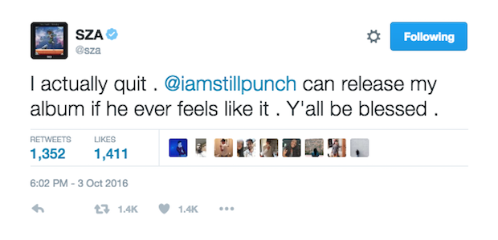

Listening to SZA's new R&B album, Ctrl, is like floating into a dream. Filled with her silvery voice, electronic production and an unabashed openness about her stage in life — she's 26-year-old woman trying to balance relationships and honesty with herself — SZA's songs feature collaborations with Kendrick Lamar, Travis Scott and Isaiah Rashad. (There's also the inclusion of phone calls with her mom and grandmother, used as interludes throughout the album.)
As many have noted, there was a (very recent) time when SZA threatened to leave music. "I actually quit," she tweeted last year, promptly deleting her message — but not before it was screen grabbed and re-shared. Thus followed speculation about Ctrl and its arrival.
But what's here has resonated, and deeply so. SZA, whose name is Solána Rowe, grew up in Maplewood, N.J., was raised Muslim, trained as a gymnast and was often one of few black girls in the room. Many of her songs, like "20 Something" and "Anything," feel like very specific anthems that young women, especially young black women in their 20s, need in 2017.
"I feel good being a black woman; I've always felt good. But to be a black woman right now, it definitely feels like I have back up," she told Complex in 2016. "That's a good feeling. I've never felt like that before."
We tapped in a few members of the NPR fam including Jenny Gathright, Sydnee Monday and Brandi Fullwood to chat with us about how SZA and Ctrl has resonated with them. Our conversation has been lightly edited.
Code Switch (Kat and Leah): All righty. So, we heard that the three of you have some very strong feelings about SZA and Ctrl. What brought you to this album to begin with?
Jenny Gathright: Have had my eye on SZA for a while. And then she got signed to TDE — and she's the only woman signed to that label, I believe. I like the music of Kendrick, Schoolboy Q, and the other Black Hippy members but definitely always see it as pretty ... masculine. So I was excited about what SZA would do on this label. And also, the anticipation for this album really seemed to build among young black women this year — this album release had been rumored for a while so I was just excited to see what she was gonna come out with.
Sydnee Monday: To be completely honest, her last project (2013's Z EP) didn't really register with me. I liked the way it sounded, but the lyrics were so metaphorical and combined with her tone, I couldn't connect as viscerally as I do with this album. But her first song that she dropped after her last project, "twoAM" was more honest and grounded than I was expecting from her. I felt it. Which began the long wait for Ctrl.
Brandi Fullwood: I've been a SZA fan for awhile now, I saw her last summer at Panorama Festival and even photographed her. I've been in an interesting time in my life for reflection and writing, understanding complex ideas about myself, race, sexuality, and so on. This comes after almost like a stream of "Black Girl Magic" content in the last couple of years in music, but SZA's closer to my age to resonate with...so I guess I was waiting for that to happen and she delivered!
Sydnee: Yes! I think age has a lot to do with my connection, too. Solange's album allowed for black girl vulnerability, but she's in her early 30s. She has a family. There was a sense that she was more removed from twentysomething problems.
Brandi: Sydnee, I agree. I really liked the last project's poeticism, it marked SZA as a great writer but Ctrl is a lot more personal and vulnerable — anecdotes and all.
Jenny: Yeah, there's actually this great quote from her interview with Breakfast Club about that. She was talking about how this album she really turned down the reverb, etc., and the message was much more direct. "When you turn down all the reverb and all the plugins and all the stacks...you're left with just your voice. And your thoughts. And you kind of have to say something — you don't have to say anything, but you have to mean it."
Code Switch: Ooh, that's a good quote. What were your first impressions of the album?
Sydnee: I really appreciated the vulnerability. I felt like I was listening to the audio version of someone's diary.
Brandi: Heh, twentysomethings. Solange and Beyoncé are tying in a lot of marital issues, but I'm not there yet. At the same time ... those themes seemed like more universal ideas that really bring black people together, but this one feels like a late-night conversation with my friends about people we're interested in...so, that's really special. First impressions, I went off. Talking about how SZA planted me in the earth and I grew from a weed to a 1,000-acre rose garden. Initially, and now, I felt so aligned and just couldn't stop asking why SZA published my journals behind my back.
Code Switch: What specifically resonated?
Sydnee: Yeah, I think there's so much power in being able to share insecurities without tone policing for young black women.
Brandi: It's like the "Killing Me Softly," but written by SZA for me and obviously other people.
Jenny: Honestly, the first thing I was struck with was the sound of her voice. I feel like no one right now is singing the way she sings — the way she kinda winds through the beats. And yes, then I was so struck with the honesty. And the things you don't say out loud but you think! Exactly, Brandi. like when she was talking about body insecurity in "Garden (Say It Like Dat)" ... it felt really real. Things you don't often hear getting talked about in music.
Brandi: Definitely a thing of "tone policing," but I definitely thought about how black women are sexually and emotionally perceived.
Sydnee: Yeah, like so often there's this sentiment that we're not allowed to share the less-than-publishable parts of ourselves. But this was complex in that young WOC are given the space to have a full range of emotion and agency and not feel as though one is more important than the other.
Brandi: And because I feel as though SZA was able to reclaim themes surrounding the body pertaining to objectification with self-care. And self-care beyond like mud masks and deep breathing exercises, but in actual actions — or vocalizing that action — of celebrating, reflection, and even holding on to genuine reactions to pain (anger, sadness, bitterness, etc.).
Code Switch: Can y'all be even more specific? We're getting nosy here — but what lyrics specifically did it for you? And why?
Jenny: I just keep returning to "Garden." "You know I'm sensitive about having no booty / Having no body / Only you, buddy / Can you hold me when nobody's around us?" Something about the way she was being so openly "needy" felt so powerful. Because I feel like so often black women are not allowed to be that way. I'm drawing power from her vulnerability there.
Brandi: There are a few lines.... but, I'm listening to "20 Something" now and whenever the line "Why you ain't say you was gettin' bored? / Why you ain't say I was fallin' short? / How you lead me out so far away?" I think about the times when black women, myself included, put themselves away to make room for other people that they love or are intimate with, but this being a return to those moments and questioning them.
That time was hurtful and there's almost a history of second guessing whether you and any other WOC is being mistreated — but especially black women. This album is validation that people are being mistreated and their feelings and personhood are being put aside for momentary, if that, sexual satisfaction.
Then, just because I love "Sit back, relax, just ease your mind, just ride / You are now watching MADtv." It's just a great juxtaposition of the trendy mindfulness with a side-eye.
Sydnee: Yeah, and I think there's a sense of hope even in the middle of questioning herself and her experiences. In "Anything," she opens by saying "Maybe I should kill my inhibition / Maybe I'll be perfect in a new dimension," but she always seems to bring it back to belief in her ability to get over it. In "Love Galore," she says "Promise I won't cry over spilled milk / Gimme a paper towel / Gimme another Valium / Gimme another hour or two."
Brandi: That song, "Doves in the Wind," even with Kendrick's critiques of women, is liberating. That could be my own listening and hearing exactly what I want from SZA, but I believe that song was meant to be more empowering of the body and women's power in owning their sexuality.
Jenny: Yeah and Sydnee, that brings me back to Brandi's point about self-care but not in the face masks way but in the — how can I really FEEL what I'm feeling and then find a way to function/move on/do what I need to do in my life — way.
Code Switch: Say more on that point, Jenny?
Sydnee: Yes! Such a good point, Jenny. Thought that space that she allowed herself to have on this album to be open and honest about ~ feelings ~ and less than perfect romantic situations is really the first step towards healing.
Jenny: When SZA talks about this album, she says it came from four years of just living her life. giving herself time to process all the relationships she's had with men since high school. and her putting this out there — even the moments that she hasn't taken a super defined moral stance on (like, for example, "The Weekend," which talks about the messiness of being the second woman in some man's life) — feels like self-care to me.
Brandi: Jenny! That's so true for me as well, especially when anti-blackness/misogynoir is so universal — in policy, pop culture, walking around.... It can be hard to not feel "the weight of the world" or its ideologies and projections in a heartbreak or relationships in general. Not sure if that's true for everyone, but that "Drew Barrymore" joint definitely suggested a lot of awareness of pop culture and marginalizing black women.
Jenny: And in that song, "The Weekend," she's kind of speaking from the perspective of both women in that scenario. When she's like "My man is your man is her man..."
Brandi: When she said "You're like 9 to 5, I'm the weekend" though, I definitely said aloud "I wish." She's at a point of reflection that I'm gonna crave to have now!
Sydnee: Yeah, I think this album does a lot of de-stigmatization work.

Brandi: That line "Promise I won't cry over spilled milk / Gimme a paper towel / Gimme another Valium / Gimme another hour or two" that Sydnee was just talking about... was so challenging to break down. The endurance, potential substance abuse and then just time...so more endurance. I can imagine because that's such a critical and open address of coping as a ~millennial~.
Sydnee: Same. I wanted to ask everyone how we felt about how the male features work in this? Juxtaposed with the recordings from her mom and grandma (I believe).
Brandi: I think the male features that were equally open, poetic or even "needy" were really great for me. Isaiah Rashad's insecurity and even Travis Scott's low pine for someone, those were special to me. And also really great sound texture...
Jenny: Yeah, I agree with Isaiah Rashad + Travis Scott, it felt nice, for once, to have them kind of have to enter SZA's space on those songs. Like, she dictated the terms of their presence in a way by setting the emotional tone. but i'm not gonna lie that when Kendrick got on the track and started talking about pussy I felt like...I didn't need or want his perspective there? Sounds harsh but idk.
Brandi: Yeah... after "Humble," I have to ask Top Dawg features to, well, do better. At the same time, I can understand the feature, but that doesn't mean other people will. Maybe people will hear Kendrick's verse and agree with him, continuing a history of stigma and stereotyping on how best to define and determine a "purpose" for black women.

Sydnee: No, I totally feel you. And I was kind of grappling with that question, too. In this project that's so vulnerable and open, is there a space for that masculinity and tone? And in that same Breakfast Club interview, she mentions that Kendrick really pushed for more mention of "pussy" in that song, so I thought that was an interesting dynamic.
Brandi: Too much ctrl. Heh.
Code Switch: To wrap up... Can the three of you talk more about why this resonates with you as young, black women?
Jenny: I feel like I hear indie rock where women are super emo, talking about feelings, singing sad songs...and honestly, I sometimes like that stuff. But it felt special to hear this album, R&B, with like 808s and boom-bap drums and hip-hop beats, where a black woman was being intensely vulnerable, showing insecurity, not asking or expecting herself to have anything fully processed...and it sounded, idk, like super BLACK. It feels like important representation. A reminder that we contain multitudes. I don't want to be essentialist about race and genre, but ... yah.
Sydnee: I think it resonated so deeply for me because it's a coming-of-age album. There's space opening up surrounding emotional honesty because young women of color are making it that way through their art. I think that I could pair Ctrl with Mitski's last album (Puberty 2). Both are the same age, 26. Both are being open and transparent about really going through growing pains. But I do agree that to have that content packaged in this genre was special to me as well. Millennials seem to get this bad rep for being "too sensitive," but it's so apparent that especially for people of color, we're going through difficult, heavy things. We see Black Death plastered on the news always. How much space is there for us to just feel? Without it being fetishized.
Jenny: I really love the Mitski comparison.
Brandi: As a black woman, anything that reinforces what black women are worth really resonates with me. The Oppositional Gaze by bell hooks set that up for me. There are parts of that book that suggest that black people, in particular women, are constantly striving to find pop culture actually about them. This album exemplifies my relationship to my blackness, to intimacy, to self-care. Of course, self-care is for everyone ... but when a black woman tells you and other black women their struggle, progress and potential, solidarity doesn't even begin to explain it.
I have a whole summer to cry over this album and mistakes I've made, but the validation and new suggestion of what to reflect on will really be great.
Sydnee: K, one last point: And I think the idea of Ctrl relates to how she approaches the content in this. The entire project isn't about changing the history of trauma that POC have experienced that might contribute to relationship dynamics, and it resists the pull to be like a protest album (even though those are important) that calls out the patriarchal system that we've been placed in that may be contributing to these feels. It's an honest re-telling of how things are in her experience. It's a black woman feeling her way through in real time.